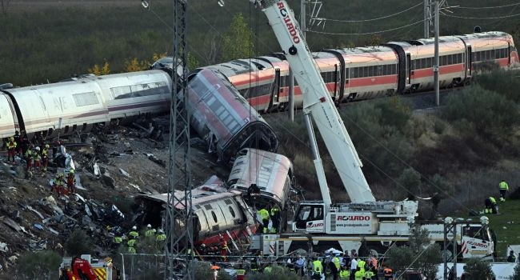

Spain Begins Three-Day Mourning After Latest Train Tragedy Kills 68

Spain began three days of mourning on Thursday after a collision between two high-speed trains in Castilla-La Mancha killed 68 people and injured scores. The crash happened on Wednesday morning on the line connecting Madrid and Seville, when a Renfe train struck the back of a stationary train operated by Iryo. Emergency crews searched the wreckage overnight, using cranes to move twisted metal as they looked for further victims.
Passengers described severe impacts and chaotic scenes inside the Renfe train. One survivor said he woke to find himself thrown into the air; another, who suffered head injuries, said a last-minute seat change may have saved his life. In the nearby village of Urda, a school was opened for relatives seeking information. Red Cross teams provided support, while Civil Guard offices in Madrid, Toledo, Cordoba and Seville collected DNA samples to help identify missing people. Blood donation points were also established in Castilla-La Mancha and Madrid.
Transport Minister Oscar Puente said an automatic control system had failed along 69 kilometres of track, leading to trains being stopped. He said the control centre then resumed traffic despite circumstances he described as inexplicable. According to Puente, the Renfe train travelled 25 kilometres before hitting the Iryo, and the control centre had time to identify and address the error. The cause of the collision has not been established in the supplied account.
The disaster has renewed scrutiny of rail safety in Spain. In January, a derailment in Andalusia led to two high-speed trains colliding after one crossed onto an adjacent track; 46 people died. That investigation remains ongoing, and the government has faced criticism over its management of the rail network. Families of those killed and missing now face a difficult process of identification and grief, with support workers warning that people will respond to the loss in different ways.
Source: Channels TV